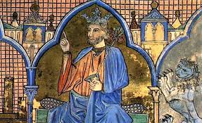
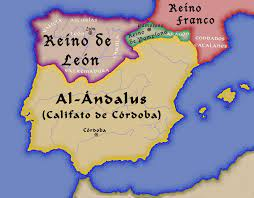

| Etapas | |
|---|---|
| Prehistoria | |
| Edad de los Metales | |
| Edad Antigua | |
| Edad Media | |
| Edad Moderna | |
| Edad Contemporánea | |
| Segunda República, Guerra Civil y franquismo | |
| Estatuto de Autonomía | |
| Antecedentes de la autonomía |
Castilla la Vieja es el nombre de una de las antiguas regiones históricas de España anteriores a la actual división en comunidades autónomas. Estaba ubicada en el antiguo Reino de Castilla, al norte del Sistema Central, conocida como la Merindad mayor de Castilla. El Reino de Castilla y el condado homónimo precedente cogen su nombre de Castella Vetula, la Castilla primigenia marca oriental del Reino de León. Es allí donde surge el romance castellano y las fazañas, derecho consuetudinario aplicado por los Jueces de Castilla.
Posteriormente Fernán González unificará todos los condados de la marca oriental del Reino leonés bajo el nombre de Castilla, que es como se conocía el núcleo primigenio de la marca. El condado se convertirá en hereditario y se expandirá hacia la Extremadura castellana, donde se organizará en Comunidad de villa y tierra. Más adelante, se convertirá en Reino y conquistará, entre otras, la Taifa de Toledo, que más adelante se conocerá con el nombre de Castilla la Nueva. Por tanto, se conocerá con el nombre de Castilla la Vieja a lo que fue el Reino de Castilla o Merindad mayor de Castilla.
Desde 1230, el Reino de León y el Reino de Castilla se unifican creando la Corona de Castilla junto a sus territorios dependientes (Galicia, Asturias, Toledo...). Dichos reinos habían sido rivales en la Reconquista, y su frontera estaba en Tierra de Campos. El Tratado de Tordehumos pacifíca la zona y con Fernando III se unifican los reinos.
La unión de esta Corona con la de Aragón es la cristalización de España. De esta unión de los reinos de Castilla y León surge la historia compartida regional, cuyo ámbito territorial es principalmente la Meseta Norte de la Península ibérica.
Dependiendo del momento histórico estuvo constituida por las provincias de Ávila, Burgos, Logroño (desde 1980, La Rioja), Segovia, Soria y Santander (desde 1982, Cantabria), Palencia y Valladolid. Así la división territorial de España en provincias de 1833 establecía que «Castilla la Vieja se divide en ocho provincias, a saber: Burgos, Valladolid, Palencia, Ávila, Segovia, Soria, Logroño y Santander», si bien las regiones mencionadas en el Real Decreto de 30 de noviembre de 1833 por el que se creaban las provincias carecían de cualquier función jurisdiccional o administrativa, no existiendo ningún nivel administrativo superior al provincial.
En el siglo XVIII, Carlos III asignaba al llamado reino de Castilla la Vieja las provincias de Burgos, Soria, Segovia, Ávila, Valladolid y Palencia (cuyos límites no coinciden con los actuales, ya que además en aquel entonces no existían ni la provincia de Santander (perteneciente en su mayor parte a la de Burgos y la de Toro) ni la provincia de Logroño (integrada casi por completo en las provincias de Soria y Burgos) y la franja norte de la actual provincia de Guadalajara estaba incluida en Soria; además las actuales comarcas toledanas de la Campana de Oropesa y la Sierra de San Vicente pertenecían a la provincia de Ávila. Las provincias de Valladolid y Palencia en ocasiones se han englobado dentro de la Región de León junto a las de Salamanca, Zamora y León.
En el caso de Cantabria se defendió la creación de una comunidad autónoma por motivos históricos, culturales y geográficos, mientras que en La Rioja el proceso resultó más complejo debido a la existencia de tres vías, fundamentadas todas ellas tanto en motivos históricos como socio-económicos: unión a Castilla y León (Unión de Centro Democrático), unión a una comunidad vasco-navarra (Partido Socialista y Partido Comunista)[cita requerida] o creación de una autonomía uniprovincial, opción tomada ante el apoyo mayoritario de su población.
Varios son los hallazgos arqueológicos que muestran que en la prehistoria estas tierras estaban ya habitadas. En la sierra de Atapuerca se han encontrado gran cantidad de huesos de los ancestros del Homo sapiens, convirtiendo estos hallazgos en unos de los más importantes para determinar la historia de la evolución humana. El descubrimiento más importante y que catapultó el yacimiento a la fama internacional fue el de los restos de Homo heidelbergensis.
Se dice que, con el Estatuto de Autonomía de Castilla y León en 1983, "Castilla la Vieja perdió buena parte de su identidad"[¿por quién?][¿dónde?], por una parte al integrarse políticamente junto con las provincias que se agrupaban en la región de León en un ente superior, y por otra al perder en favor de autonomías provinciales dos de sus componentes (Santander y Logroño), que pasaron a constituir las comunidades autónomas de Cantabria y La Rioja, respectivamente. Lo cierto es que desde la antropología se identifican relaciones etnográficas entre el Este y el Oeste de la comunidad de Castilla y León.
Puesto que el habla montañesa, de zonas rurales de Cantabria, Montaña Palentina, Valle de Sotoscueva y pasiegos de Burgos, es una variante del astur-leonés,el astur-leonés no es históricamente un hecho diferencial entre Castilla la Vieja y León.
La denominación Castilla la Nueva, para las tierras meridionales de Castilla, es contradistinta (referida a dos mitades de un todo) de Castilla la Vieja
Castilla y León es una comunidad autónoma española, referida como «comunidad histórica y cultural» en su Estatuto de Autonomía.Se constituyó como preautonomía en 1978 y adquirió su estatus de comunidad autónoma en 1983.Su territorio se sitúa en la parte norte de la meseta de la península ibérica y se corresponde mayoritariamente con la parte española de la cuenca hidrográfica del Duero. Está compuesta por nueve provincias: Ávila, Burgos, León, Palencia, Salamanca, Segovia, Soria, Valladolid y Zamora. Es la comunidad autónoma más extensa de España, con una superficie de 94 226 km², y la sexta más poblada, con 2.409.166 habitantes en 2019.
Ya desde el inicio del debate federalista en España en el siglo xix durante la Primera República hubo proyectos de autonomía para una región castellana y leonesa, aunque incluyendo también a las actuales Cantabria y La Rioja.El mismo proyecto siguió existiendo durante la Segunda República y finalmente se llevó a cabo tras la Constitución de 1978, pero sin Cantabria y La Rioja que, aunque se consideró incluirlas, finalmente formaron autonomías uniprovinciales.
El Estatuto de Autonomía define una serie de valores esenciales y símbolos de los habitantes de Castilla y León, como su patrimonio lingüístico —aludiendo a la lengua castellana y al resto de lenguas habladas en la comunidad: el leonés y el gallego— o su patrimonio histórico, artístico y natural. Entre los símbolos se encuentran el blasón, la bandera, el pendón, el himno —pese a que no existe—, al tiempo que el 23 de abril queda definido como Día de Castilla y León, en conmemoración de la derrota sufrida por los ejércitos de las Comunidades de Villa y Tierra castellanas en Villalar durante la Guerra de las Comunidades, en 1521.
La comunidad autónoma de Castilla y León es el resultado de la unión en 1983 de nueve provincias: las tres que, tras la división territorial de 1833, por la que se crearon las provincias actuales, se adscribieron a la Región de León (Salamanca, Zamora y León) y seis adscritas a Castilla la Vieja (Burgos, Soria, Segovia, Ávila, Valladolid y Palencia), exceptuando en este último caso las provincias de Santander (actual comunidad de Cantabria) y Logroño (actual La Rioja).
